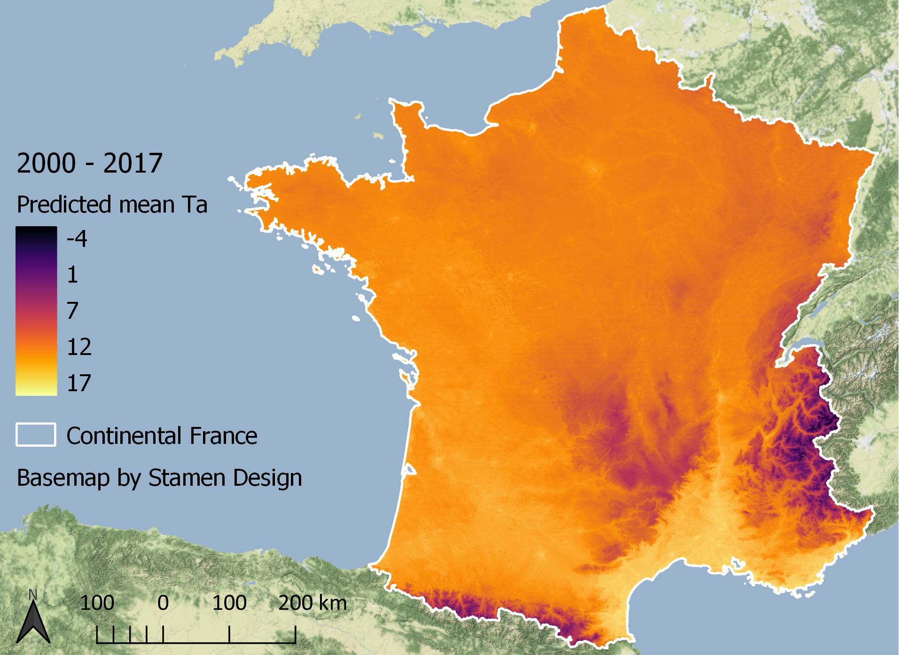

Climate change, air pollution, and perinatal health: the combined effects of temperature and air pollution in sensitive populations
PhD Research Proposal
Ian Hough
2018-10-24
Advisors Itai Kloog & Johanna Lepeule

Outline
- Context
- Overview
- Adverse birth outcomes
- Ambient temperature & particulate matter
- Proposed research
- Objectives
- Exposure models
- Birth outcomes study
Context
Overview
Adverse birth outcomes
Preterm birth (<37 weeks gestation)
- Leading cause of child mortality (Liu et al., 2016)
- 11% of all births and increasing (Harrison and Goldenberg, 2016)
- Sequalae in childhood and adulthood (e.g. asthma, cerebral palsy, behavioural problems) (McCormick et al., 2011)
Term low birth weight (<2500 g)
- Increased morbidity and mortality in childhood and adulthood (Barker, 2004; Belbasis et al., 2016)
Ambient temperature (Ta)
- Heat, cold, or variable Ta can increase risk (Zhang et al., 2017)
- Response may depend on local population & climate
- Hard to synthesize findings
| Preterm birth | Birth weight | Term low birth weight | |
|---|---|---|---|
| Exposure | Cold (<10th %ile) | IQR Ta increase | Heat (>95th %ile) |
| Window | Weeks 1–7 | Last 30 days | Trimester 3 |
| Statistic | Relative risk | Decrease | Odds ratio |
| Effect | 1.09 [1.04–1.15] | 16.6 g [5.9–27.4] | 1.31 [1.15–1.49] |
| Study | (Ha, D. Liu, et al., 2017) | (Kloog et al., 2015) | (Ha, Y. Zhu, et al., 2017) |
Particulate matter (PM)
PM10 ↑ 10 \(\mu\)g/m3 entire pregnancy
| Preterm birth | Birth weight | Term low birth weight | |
|---|---|---|---|
| Statistic | Pooled odds ratio | Pooled decrease | |
| Effect | 0.97 [0.86–1.08] | 10.3 g [7.1–13.6] | Too few studies |
| Study | (Lamichhane et al., 2015) | (Lamichhane et al., 2015) |
PM2.5 ↑ 10 \(\mu\)g/m3 entire pregnancy
| Preterm birth | Birth weight | Term low birth weight | |
|---|---|---|---|
| Statistic | Pooled odds ratio | Pooled decrease | Pooled odds ratio |
| Effect | 1.13 [1.03–1.24] | 15.9 g [5.0–26.8] | 1.09 [1.03–1.15] |
| Study | (Sun et al., 2015) | (Sun et al., 2016) | (Sun et al., 2016) |
Proposed research
Objectives
- Model daily min, mean, and max Ta in France 2000–2016
- 1 km estimates entire area
- 200 m estimates for urban areas
- Model daily PM10 and PM2.5 in France
- 1 km estimates entire area
- 200 m estimates for urban areas
- Study associations between Ta, PM, and birth outcomes
- Windows of susceptibility
- Acclimatization to Ta
- Interactions between Ta and PM
Exposure models
Why model Ta and PM?
Sparse monitoring networks
→ Error in exposure estimate
→ May bias effect estimates towards null

Modelling approaches
Physical models
- Numerical weather prediction → complex
- Dispersion / chemical transport → complex
Statistical models
- Inverse distance weighting → poor performance
- Land use regression → low temporal variability
- Hybrid models
Hybrid statistical models
1. Satellite data (& other spatial predictors)
- Ta ← land surface temperature (LST)
- PM ← aerosol optical depth (AOD)
MODIS (Terra + Aqua)
- 1 km spatial resolution
- LST 2x / day + 2x / night
- AOD 2x / day
- Free ready-to-use products (LST and AOD)
Hybrid statistical models
2. Statistical model
- Linear regression
- Geographically weighted regression
- Spatiotemporal regression-kriging
- Linear mixed models (Just et al., 2015; Kloog et al., 2014, 2017; Shtein et al., 2018)
- Random forest, gradient boosting, elastic net, etc.
Linear mixed model approach
Stage 1: calibration

\(T_a = (\alpha + \mu_{jr}) + (\beta_1 + \nu_{jr}) \cdot LST + \beta_2 \cdot Emissivity + \\ \; \; \; \; \; \; \; \; \beta_3 \cdot NDVI + \beta_4 \cdot Elevation + \beta_5 \cdot Population + \\ \; \; \; \; \; \; \; \; \beta_6 \cdot Land Cover + e\)
j = day
r = climatic region
Stage 2: prediction
Stage 3: gap filling
\(T_{a\ predicted} = (\alpha + \mu_{ip}) + (\beta_1 + \nu_{ip}) \cdot T_{IDW} + e\)
i = grid cell
p = two-month period

Model performance
Cross-validated 1 km predictions
| 2000–2016 | R2 | RMSE | Spatial R2 | Temporal R2 | Spatial RMSE |
|---|---|---|---|---|---|
| Ta min | 0.92 | 1.89 | 0.83 | 0.93 | 0.97 |
| Ta mean | 0.97 | 1.29 | 0.95 | 0.97 | 0.57 |
| Ta max | 0.95 | 1.81 | 0.89 | 0.96 | 0.99 |
Improvement over previous model (Kloog et al., 2017)
| 2000–2011 | R2 | RMSE | Spatial R2 | Temporal R2 | Spatial RMSE |
|---|---|---|---|---|---|
| Ta mean | 0.02 | 0.25 | 0.04 | 0.01 | 0.09 |

Urban 200 m predictions
Landsat 5 / 7 / 8 (ETM+ / TIRS)
- 60 m / 120 m spatial resolution
- One overpass every 16 days (sometimes 8 days)
- No precalculated LST (at-satellite brightness temperature)
Building footprints + height
- Skyview factor
Ta model status
Complete
- Ta 1 km estimates
In progress
- Ta 200 m urban estimates
- Ta paper
PM model status
In progress
- PM data preparation
Forthcoming
- PM 1 km estimates
- Estimate PM2.5 at PM10-only stations
- Reduce MAIAC error using AERONET data (Just et al., 2018)
- PM 200 m urban estimates
- PM paper
Birth outcomes study
Unresolved questions
Windows of susceptibility
- Mixed results to date
- PM exposure tends to be correlated across trimesters
Acclimatization
- Suggested for mortality (Gasparrini et al., 2015; Lee et al., 2014)
Interactions between Ta and PM
- Synergy suggested for mortality (Kioumourtzoglou et al., 2016; Li et al., 2017)
Study design
- 5923 mother-child pairs from three prospective cohorts
- Birth weight, term low birth weight, preterm birth
- High, low, and variable Ta and PM
- Windows of susceptibility
- Day, up to 7 days, week, 4 weeks, trimester, entire pregnancy
- Acclimatization
- Interactions
- Linear / logistic / Cox models
- Distributed non-linear lags
Thank you!
References
Barker, D.J.P., 2004. The Developmental Origins of Adult Disease. Journal of the American College of Nutrition 23, 588S–595S. https://doi.org/10.1080/07315724.2004.10719428
Belbasis, L., Savvidou, M.D., Kanu, C., Evangelou, E., Tzoulaki, I., 2016. Birth weight in relation to health and disease in later life: An umbrella review of systematic reviews and meta-analyses. BMC Medicine 14. https://doi.org/10.1186/s12916-016-0692-5
Gasparrini, A., Guo, Y., Hashizume, M., Lavigne, E., Zanobetti, A., Schwartz, J., Tobias, A., Tong, S., Rocklöv, J., Forsberg, B., Leone, M., De Sario, M., Bell, M.L., Guo, Y.-L.L., Wu, C.F., Kan, H., Yi, S.M., De Sousa Zanotti Stagliorio Coelho, M., Saldiva, P.H.N., Honda, Y., Kim, H., Armstrong, B., 2015. Mortality risk attributable to high and low ambient temperature: A multicountry observational study. The Lancet 386, 369–375. https://doi.org/10.1016/S0140-6736(14)62114-0
Ha, S., Liu, D., Zhu, Y., Kim, S.S., Sherman, S., Mendola, P., 2017. Ambient temperature and early delivery of Singleton Pregnancies. Environmental Health Perspectives 125, 453–459. https://doi.org/10.1289/EHP97
Ha, S., Zhu, Y., Liu, D., Sherman, S., Mendola, P., 2017. Ambient temperature and air quality in relation to small for gestational age and term low birthweight. Environmental Research 155, 394–400. https://doi.org/10.1016/j.envres.2017.02.021
Harrison, M.S., Goldenberg, R.L., 2016. Global burden of prematurity. Seminars in Fetal and Neonatal Medicine 21, 74–79. https://doi.org/10.1016/j.siny.2015.12.007
Just, A., De Carli, M., Shtein, A., Dorman, M., Lyapustin, A., Kloog, I., 2018. Correcting Measurement Error in Satellite Aerosol Optical Depth with Machine Learning for Modeling PM2.5 in the Northeastern USA. Remote Sensing 10, 803. https://doi.org/10.3390/rs10050803
Just, A.C., Wright, R.O., Schwartz, J., Coull, B.A., Baccarelli, A.A., Tellez-Rojo, M.M., Moody, E., Wang, Y., Lyapustin, A., Kloog, I., 2015. Using High-Resolution Satellite Aerosol Optical Depth To Estimate Daily PM2.5 Geographical Distribution in Mexico City. Environmental Science & Technology 49, 8576–8584. https://doi.org/10.1021/acs.est.5b00859
Kioumourtzoglou, M.-A., Schwartz, J., James, P., Dominici, F., Zanobetti, A., 2016. PM2.5 and mortality in 207 US cities: Modification by temperature and city characteristics. Epidemiology 27, 221–227. https://doi.org/10.1097/EDE.0000000000000422
Kloog, I., Chudnovsky, A.A., Just, A.C., Nordio, F., Koutrakis, P., Coull, B.A., Lyapustin, A., Wang, Y., Schwartz, J., 2014. A new hybrid spatio-temporal model for estimating daily multi-year PM2.5 concentrations across northeastern USA using high resolution aerosol optical depth data. Atmospheric Environment 95, 581–590. https://doi.org/10.1016/j.atmosenv.2014.07.014
Kloog, I., Melly, S.J., Coull, B.A., Nordio, F., Schwartz, J., 2015. Using Satellite-Based Spatiotemporal Resolved Air Temperature Exposure to Study the Association between Ambient Air Temperature and Birth Outcomes in Massachusetts. Environmental Health Perspectives 123, 1053–1058. https://doi.org/10.1289/ehp.1308075
Kloog, I., Nordio, F., Lepeule, J., Padoan, A., Lee, M., Auffray, A., Schwartz, J., 2017. Modelling spatio-temporally resolved air temperature across the complex geo-climate area of France using satellite-derived land surface temperature data. International Journal of Climatology 37, 296–304. https://doi.org/10.1002/joc.4705
Lamichhane, D.K., Leem, J.-H., Lee, J.-Y., Kim, H.-C., 2015. A meta-analysis of exposure to particulate matter and adverse birth outcomes. Environmental Health and Toxicology 30, e2015011. https://doi.org/10.5620/eht.e2015011
Lee, M., Nordio, F., Zanobetti, A., Kinney, P.L., Vautard, R., Schwartz, J., 2014. Acclimatization across space and time in the effects of temperature on mortality: a time-series analysis. Environmental Health 13, 89. https://doi.org/10.1186/1476-069X-13-89
Li, J., Woodward, A., Hou, X.Y., Zhu, T., Zhang, J., Brown, H., Yang, J., Qin, R., Gao, J., Gu, S., Li, J., Xu, L., Liu, X., Liu, Q., 2017. Modification of the effects of air pollutants on mortality by temperature: A systematic review and meta-analysis. Science of the Total Environment 575, 1556–1570. https://doi.org/10.1016/j.scitotenv.2016.10.070
Liu, L., Oza, S., Hogan, D., Chu, Y., Perin, J., Zhu, J., Lawn, J.E., Cousens, S., Mathers, C., Black, R.E., 2016. Global, regional, and national causes of under-5 mortality in 2000–15: an updated systematic analysis with implications for the Sustainable Development Goals. The Lancet 388, 3027–3035. https://doi.org/10.1016/S0140-6736(16)31593-8
McCormick, M.C., Litt, J.S., Smith, V.C., Zupancic, J.A., 2011. Prematurity: An Overview and Public Health Implications. Annual Review of Public Health 32, 367–379. https://doi.org/10.1146/annurev-publhealth-090810-182459
Shtein, A., Karnieli, A., Katra, I., Raz, R., Levy, I., Lyapustin, A., Dorman, M., Broday, D.M., Kloog, I., 2018. Estimating daily and intra-daily PM10 and PM2.5 in Israel using a spatio-temporal hybrid modeling approach. Atmospheric Environment 191, 142–152. https://doi.org/10.1016/j.atmosenv.2018.08.002
Sun, X., Luo, X., Zhao, C., Chung Ng, R.W., Lim, C.E.D., Zhang, B., Liu, T., 2015. The association between fine particulate matter exposure during pregnancy and preterm birth: A meta-analysis. BMC Pregnancy and Childbirth 15, 1–12. https://doi.org/10.1186/s12884-015-0738-2
Sun, X., Luo, X., Zhao, C., Zhang, B., Tao, J., Yang, Z., Ma, W., Liu, T., 2016. The associations between birth weight and exposure to fine particulate matter (PM2.5) and its chemical constituents during pregnancy: A meta-analysis. Environmental Pollution 211, 38–47.
Zhang, Y., Yu, C., Wang, L., 2017. Temperature exposure during pregnancy and birth outcomes: An updated systematic review of epidemiological evidence. Environmental Pollution 225, 700–712. https://doi.org/10.1016/j.envpol.2017.02.066